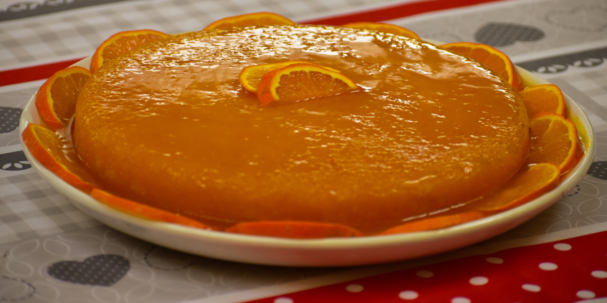

Bolo de laranja
| Dificuldade | Porções | Tempo de preparo |
|---|---|---|
| Fácil | 20 pedaços | 35 minutos |

Ingredientes
- 4 ovos
- 1/2 xícara de chá de óleo
- 1 xícara de suco de laranja
- 1 pedaço de casca de laranja, mais ou menos o tamanho de uma moeda
- 2 xícaras de açúcar
- 3 xícaras de farinha de trigo
- 1 pacote de fermento em pó para bolo
Modo de preparo
- Coloque os ingredientes na ordem acima no liquidificador.
- Bata um pouco e coloque em uma forma com furo no meio.
- Leve para assar em forno médio, pré-aquecido, por cerca de 40 minutos, ou até dourar.
Melhor bolo do mundo